Grafana Guide: Time Series Panels
|
This content was generated with the assistance of AI and should be verified against the official documentation before being relied on in production. |
Checked on 2026-11-11 against Grafana 13.3.x.
What you build
You take the panel Requests per second by status that the first-dashboard guide created and turn it into a complete time series panel. A second query adds the 95th percentile of the response time of the Bookshelf service. The legend becomes a table with the mean and the maximum of each series, the axis gets a label, the lines get a fill, a threshold marks 10 requests per second, and an override moves the latency to its own axis on the right with the unit seconds.
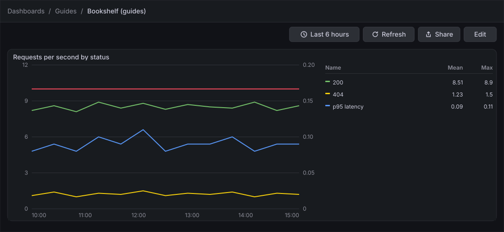
Before you start
-
Start the Grafana profile of the hands-on lab and wait about a minute:
cd lab docker compose --profile grafana up -d -
Open http://localhost:3000, sign in as
adminwith the passwordadmin, and click Skip when Grafana 13.3 asks you to update the default password. -
Do the previous guide, Create a dashboard and the first panel. It creates the dashboard Bookshelf (guides) in the folder Guides with the panel that this guide extends. The screens of the dashboard in edit mode and of the panel editor are described by the two screen maps of that guide.
-
The data source Prometheus is provisioned by the lab and is the default data source. The load generator sends traffic to the Bookshelf service in its default mode, which gives both queries something to draw.
-
The guide was checked on Grafana Enterprise 13.3.0 (the free image, no licence key). Editing dashboards needs the Editor or Admin role of the organization;
adminhas it. -
The figures are drawings of the Grafana 13.3 user interface, not screenshots, so small details can differ from your screen. A highlighted box with a number marks the control of the step with the same number. The option pane has more categories than the figures draw; they are collapsed where a step does not need them.
Steps
All the settings of this guide are in the options pane at the right of the panel editor. Its categories for a time series are Panel options, Panel links, Repeat options, Show / hide rules, Panel styles, Tooltip, Legend, Axis, Graph styles, Standard options, Data links and actions, Value mappings, Thresholds and, at the bottom, the button Add field override. Click the title of a category to open or close it. The Search options box at the top of the pane finds an option by name.
Open the panel in the editor
-
In the left navigation, click Dashboards, open the folder Guides and click Bookshelf (guides).
-
Click Edit at the top right of the toolbar.
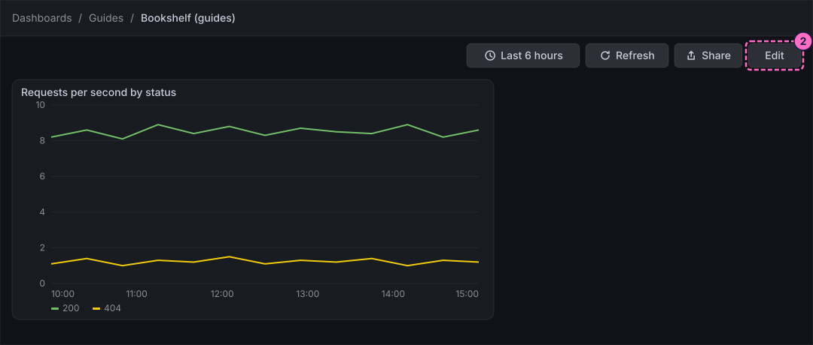
-
Click the panel Requests per second by status to select it. The right sidebar shows the Panel pane.
-
In the Panel pane, click Edit visualization.
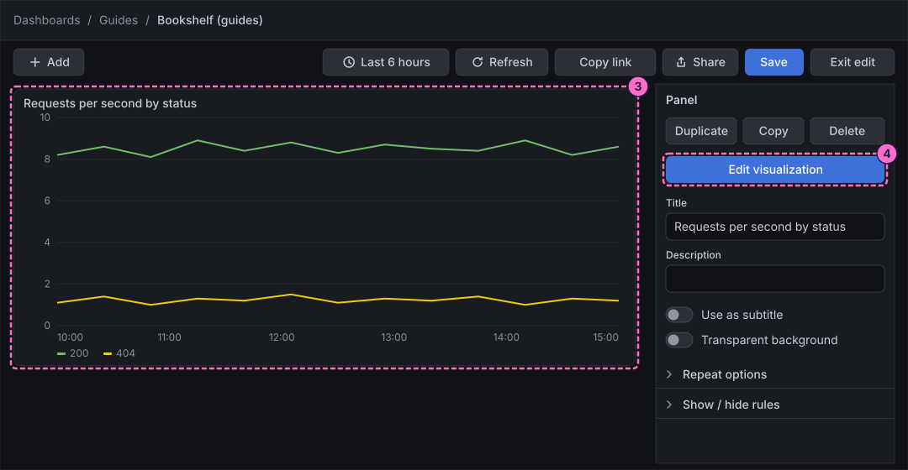
Add a second query
-
At the bottom of the editor, on the tab Queries, click Add query under query A.
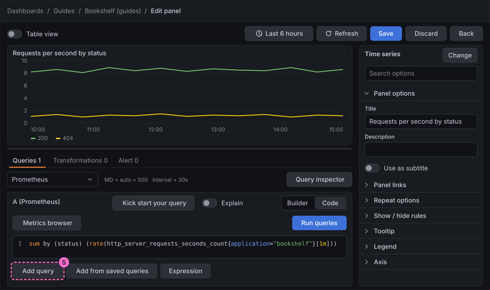
-
In the new query B, click Code in the Builder / Code switch.
-
Click inside the query editor first, so that it has the focus, then type the query. It draws the 95th percentile of the response time in seconds, and
label_replacegives the series the namep95 latencythat the legend and the override use:label_replace(histogram_quantile(0.95, sum by (le) (rate(http_server_requests_seconds_bucket{application="bookshelf"}[1m]))), "series", "p95 latency", "", "") -
Click Run queries.
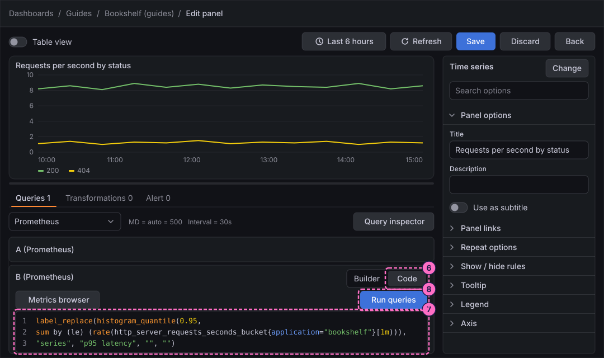
The preview now draws three lines. The latency, about a tenth of a second, lies flat on the zero line because it shares the axis with the requests per second. The next steps fix that.
Show the legend as a table
-
In the options pane, open Legend. For Mode, click Table. The Visibility switch of the legend is on by default.
-
Click the field Values and choose two calculations, for example Mean and Max. The legend table gets one column for each of them.
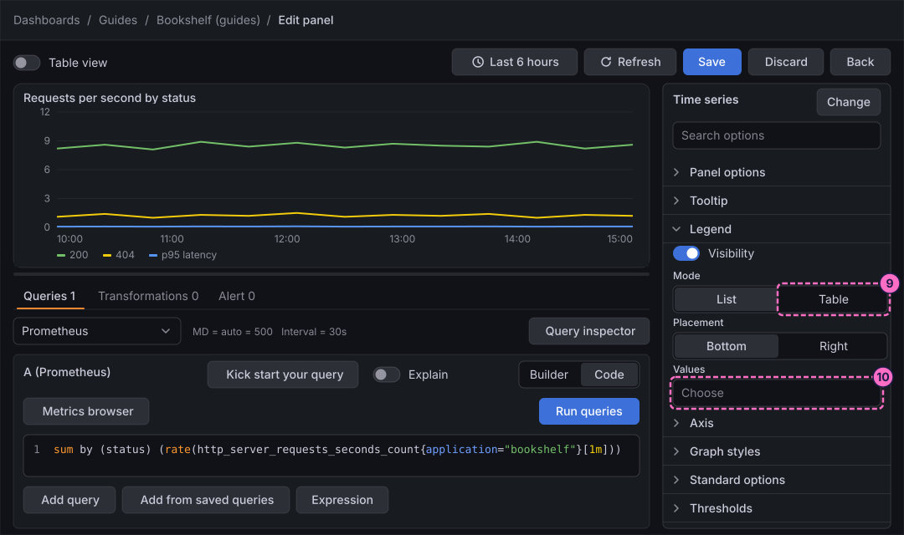
Set the unit and the axis
-
Open Standard options. Click the Unit picker, type
requestsin its search box and choose the entry for requests per second. The tooltip and the legend now show the unit.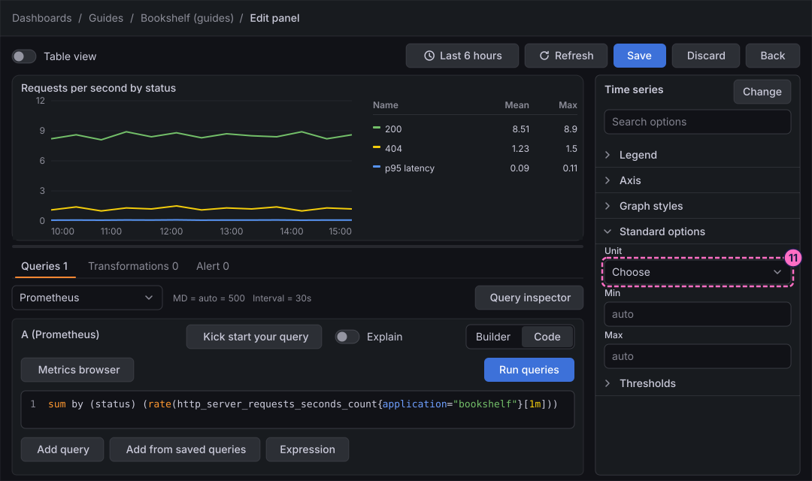
-
Open Axis. In Label, type
Requests per second. -
In Soft min, type
0. A soft minimum keeps the axis from starting at the lowest value in the data but still lets it grow below zero if the data requires it.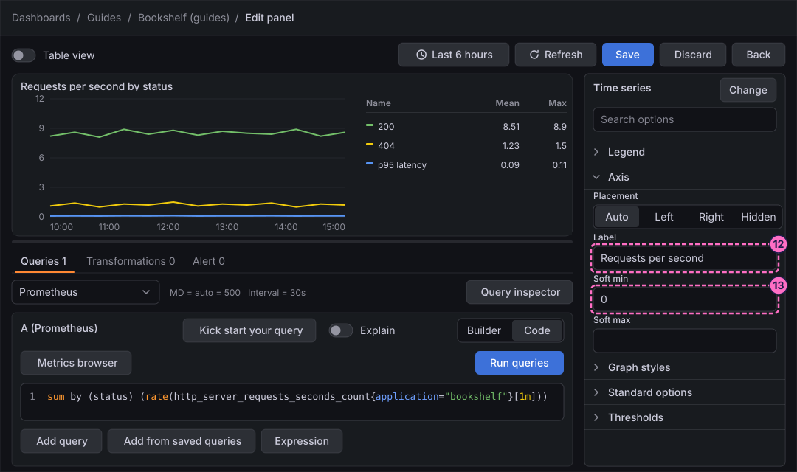
Choose the graph style
-
Open Graph styles. Keep Style on Lines. In Line width, type
2. -
In Fill opacity, type
20. -
For Gradient mode, click Opacity. The area under each line fades towards the bottom.
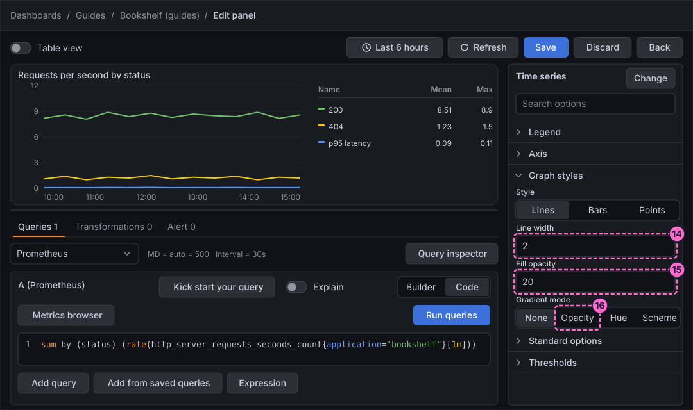
Add a threshold
-
Open Thresholds. The list has a base step in green and a second step in red with the value
80. Replace80with10, so that the red step starts at 10 requests per second. -
In Show thresholds, choose As lines. A red line now marks the value 10 in the preview. The list offers other ways to show the threshold, for example as filled regions; choose another entry to compare and come back to As lines.
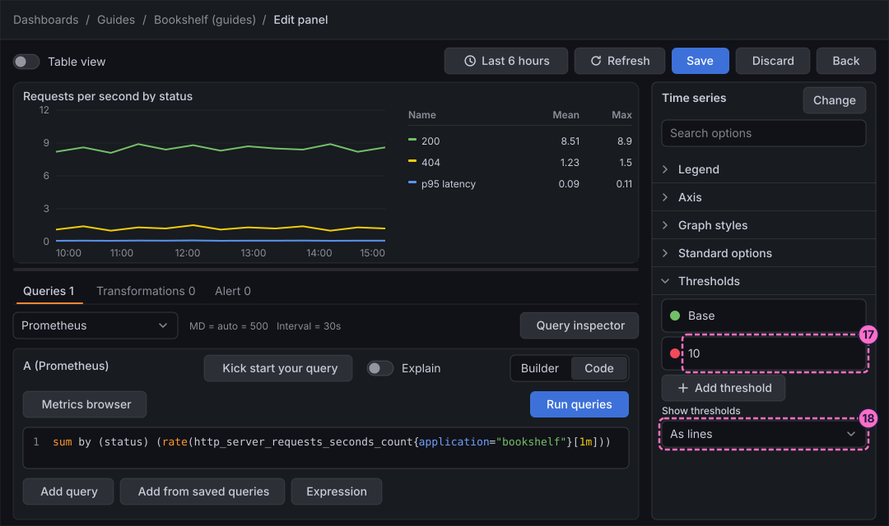
Give the latency its own axis with an override
-
Scroll to the bottom of the options pane and click Add field override.
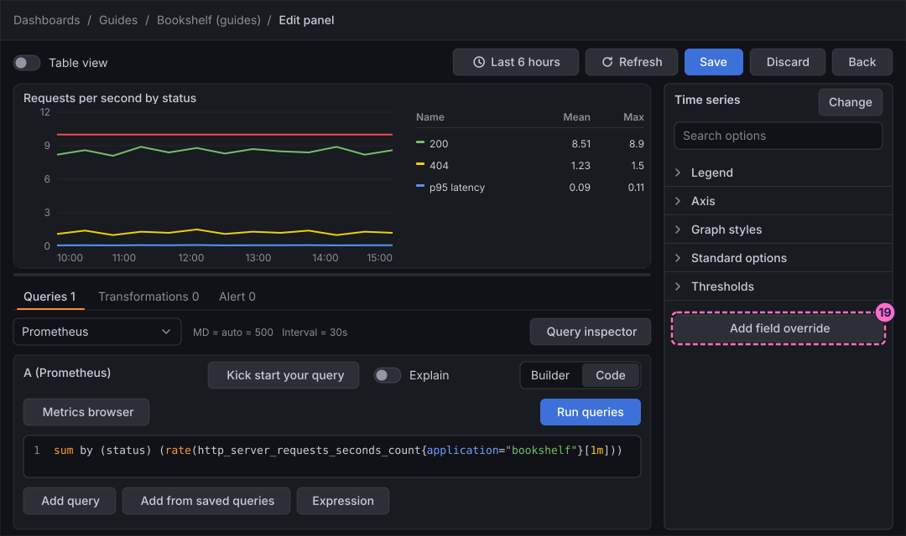
-
In the new override, choose which fields it applies to: use the selection by field name and pick
p95 latency. -
Click Add override property, choose Axis → Placement and set it to Right.
-
Click Add override property again, choose Standard options → Unit and choose the entry for seconds.
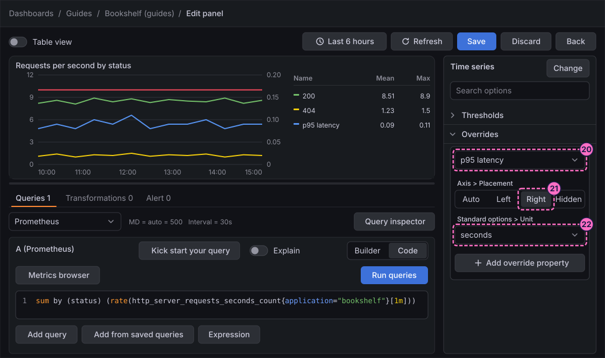
Save the panel
-
Click Save in the header of the editor. The 13.3 panel editor has no Apply button; Save saves the whole dashboard and Back returns to it.
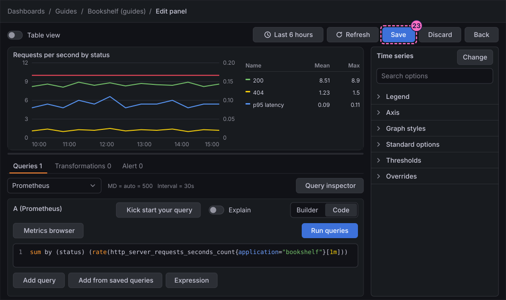
-
In the Save dashboard drawer, optionally type a note in Message and click Save.
-
Click Back.
-
Click Exit edit. If Grafana 13.3.0 shows the dialog Unsaved changes ("Do you want to save your changes?"), which it does even right after a save, click Save.
-
If a second Save dashboard drawer opens, click Save again. Edit mode closes and the dashboard shows the finished panel.
Check the result
Open Dashboards → Guides → Bookshelf (guides). The panel must show a green line for 200, a yellow line for 404 and a blue line for p95 latency that reads against the right axis, a red line at 10 on the left axis and a legend table with the columns Mean and Max.
To see the right axis react, slow the service down and press Refresh; the blue line rises while the left axis does not change:
curl -X POST localhost:8090/mode/slowForce errors to add a line for the status 500 to the requests, and restore normal traffic afterwards:
curl -X POST localhost:8090/mode/failing
curl -X POST localhost:8090/mode/normalVariations
-
In Graph styles, set Style to Bars or Points, or Stack series to Normal to pile the status codes on top of each other.
-
In Legend, set Placement to Right when the panel is tall and narrow, and use Series visibility to hide a series from the legend.
-
In Tooltip, set Tooltip mode to All to see every series when you hover the chart.
-
On the dashboard, open the panel in View panel mode: its sidebar pane offers Quick toggles for the legend, the axis scale and stacking, and Fan-out by series or label to split a multi-series panel into one chart per series without editing it.
What can go wrong
| Symptom | Cause | Fix |
|---|---|---|
Query B shows No data |
The text was typed before the editor had the focus, or the lab started less than a few minutes ago and Prometheus has no histogram samples yet. |
Click in the editor, select all with Ctrl+A (Cmd+A on macOS) and type the query again, or wait a few minutes and press Refresh. |
The latency line lies flat on the zero line |
It shares the left axis with the request rate, or the override does not apply. |
Check that the override selects the field |
The override lists no field to choose |
Query B has not run yet, so Grafana does not know the field names. |
Click Run queries, then add the override again. |
The legend table has no Mean or Max column |
Values is empty, or Mode is still List. |
Set Mode to Table and choose the calculations in Values. |
Exit edit keeps showing Unsaved changes |
Grafana 13.3.0 raises the dialog even after a save. |
Click Save, and Save again in the drawer; the dialog does not return once edit mode has closed. |
Clean up
Keep the dashboard: the following guides in this series add panels to it. Send curl -X POST localhost:8090/mode/normal if you changed the mode of the load generator. To remove everything the lab stores, stop the
profile with docker compose --profile grafana down -v, which also deletes the volumes and therefore the dashboard.
Where to go next
-
Previous guide: Create a dashboard and the first panel.
-
Next guide: Stat, gauge and bar gauge, which adds three panels that show one value instead of a history.
-
Reference: Graphs and Charts describes every time series option, and Field Configuration covers units, thresholds, value mappings and overrides in depth.